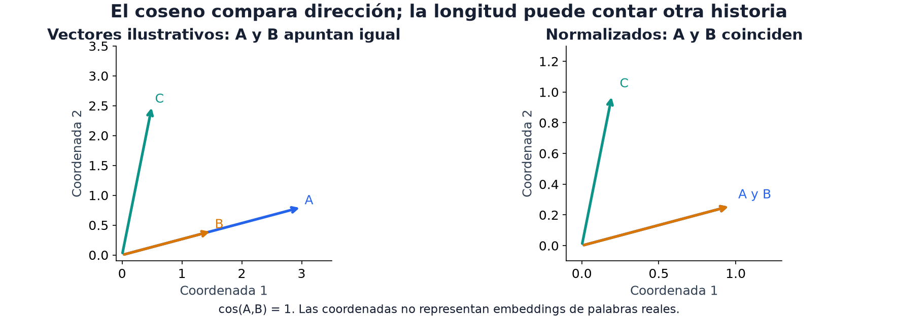

12 · Embeddings
Nivel 2 — Deep learning · Ruta de Aprendizaje
Una tabla permite aplicar los modelos del Nivel 1, pero una frase o una imagen no llega en columnas comparables. ¿Cómo convertir cada objeto en una fila que conserve lo importante? Los embeddings son representaciones vectoriales; su utilidad depende de qué relaciones aprendieron a conservar.
Una representación conecta modalidades y modelos
Un embedding asigna un vector de números a un objeto: una categoría, una palabra, una imagen o un audio. Un encoder es la función que calcula esa representación a partir de la entrada. Si se entrena para acercar objetos relacionados, su geometría puede servir para buscar parecidos. No todo vector aprendido posee automáticamente ese significado.
imagen / texto / audio → encoder apropiado → un vector → modelo o búsqueda
Si obtienes 512 números por imagen, puedes reunirlos en una tabla y entrenar sobre ella un modelo clásico. La visión sigue importando: elegir un encoder, preparar sus entradas y decidir qué parte de su salida usar determina qué información llega a esa tabla. Los capítulos de modalidades desarrollan esas decisiones.
nn.Embedding: la tabla de vectores entrenables
La forma más simple es una tabla entrenable: cada categoría selecciona una fila. Los identificadores son direcciones de consulta, no cantidades: que una categoría se llame 17 no la hace «mayor» que la 3. La tabla suele empezar al azar; la pérdida y los ejemplos determinan cómo cambian sus vectores.
# bloque: fragmento
import torch
import torch.nn as nn
emb = nn.Embedding(num_embeddings=1000, embedding_dim=16) # 1000 categorías -> 16 dims
ids = torch.tensor([3, 17, 999])
print(emb(ids).shape) # torch.Size([3, 16])ids contiene tres categorías, así que la salida tiene tres filas de 16
coordenadas. Repetir un id recupera la misma fila; cuando se entrena, sus
apariciones aportan gradiente a esa fila compartida.
Un vector one-hot tiene una entrada 1 en la categoría activa y ceros en las
demás. nn.Embedding obtiene directamente la fila de una tabla entrenable: la
salida por ejemplo tiene 16 números en vez de materializar 1000 columnas. La
tabla sí crece con el vocabulario: aquí contiene 1000×16 parámetros.
One-hot multiplicado por una matriz entrenable y un embedding lookup son la misma operación matemática. Ambos pueden aprender representaciones similares; el lookup evita construir el vector disperso explícitamente.
# bloque: probado; id: one_hot_embedding
import torch
import torch.nn.functional as F
emb = torch.nn.Embedding(5, 3)
ids = torch.tensor([0, 3, 3, 4])
one_hot = F.one_hot(ids, num_classes=5).to(emb.weight.dtype)
assert torch.allclose(one_hot @ emb.weight, emb(ids))Dónde aparece esto en una tarea real: Robot Chasing (2026) tenía robot_id,
tipos de objeto y colores como enteros categóricos. Un nn.Embedding chico para
cada uno permite aprender una representación compacta. El mismo resultado
puede expresarse con one-hot seguido de una capa lineal sin sesgo.
Usar una representación ya entrenada
Un modelo preentrenado puede haber aprendido rasgos útiles para otra tarea. Podemos usarlo sin actualizar sus pesos. El siguiente fragmento supone un extractor que ya devuelve un vector por ejemplo; no todos los modelos ofrecen directamente ese formato:
# bloque: fragmento
modelo.eval()
with torch.no_grad():
vectores = modelo(lote) # (n, d): un vector por ejemploEn una ResNet puede interesar la representación anterior al clasificador; en BERT, los estados de los tokens; en un modelo de audio, los estados de su encoder. Algunos devuelven objetos con varios campos, no un tensor simple. Cada familia exige también su preprocesamiento: normalización de imagen, tokenización o preparación de la señal. Usar la representación correcta es parte de construir el extractor.
En la competencia hay un detalle que no se puede olvidar: los modelos vienen pre-cacheados y la lista es cerrada por tarea (ver el módulo 03). Usa las rutas locales indicadas en el enunciado. Un id del Hub puede cargar desde caché aun sin internet, pero eso no comprueba que sea el modelo permitido ni que esté completo.
Pooling: de muchos vectores a uno
Un token es una unidad del texto, a menudo una palabra o un fragmento de
palabra. Muchos encoders devuelven un vector por token: (n_tokens, d).
Para un clasificador que recibe un vector por texto necesitamos resumirlos.
Ese resumen se llama pooling. Este ejemplo usa cuatro secuencias de siete
tokens, con ocho coordenadas por token:
# bloque: fragmento
import torch
H = torch.randn(4, 7, 8) # (lote, tokens, dimensión)
mean_pool = H.mean(dim=1) # (4, 8) — el promedio
max_pool = H.max(dim=1).values # (4, 8) — el máximo por dimensión
print(mean_pool.shape, max_pool.shape)Mean pooling promedia cada coordenada a lo largo de los tokens; produce una representación del conjunto. Max pooling conserva el máximo por coordenada: puede recoger señales localizadas, aunque los máximos de distintas coordenadas provengan de tokens distintos. Ambos eliminan detalle de la secuencia.
Otro camino es usar un token especial, como [CLS] en BERT: H[:, 0].
Su utilidad como resumen depende de cómo se entrenó ese modelo. Conviene
respetar el pooling del modelo cuando viene especificado y comparar alternativas
en validación cuando la tarea lo permita.
⚠️ Con secuencias de largo variable hay que enmascarar. Si rellenaste con padding para que todas midan igual, el promedio simple incluye el relleno y te contamina el vector. El promedio correcto pesa solo los tokens reales:
# bloque: probado; id: pooling_enmascarado
mascara = mascara.unsqueeze(-1) # (lote, tokens, 1)
suma = (H * mascara).sum(dim=1)
promedio = suma / mascara.sum(dim=1).clamp(min=1)La máscara contiene 1 para tokens válidos y 0 para relleno. unsqueeze(-1)
agrega un eje para aplicarla a todas las coordenadas del token. Sumamos solo
vectores válidos y dividimos por su cantidad. Es la misma idea de broadcasting
del módulo 09. Este bloque espera estados H finitos y una máscara con al menos
un token válido en los textos ordinarios.
Si una fila de la máscara está completamente en cero, clamp(min=1) evita
una división por cero y la salida queda en cero. Eso evita un fallo numérico,
pero no crea significado para una entrada vacía: hay que decidir cómo tratarla.
Congelar, extraer y comparar
Una representación fija permite separar dos trabajos: calcular features y aprender a predecir con ellas. Si el encoder y el preprocesamiento no cambian, los vectores pueden reutilizarse al comparar una regresión, k-NN o boosting. Ese ahorro facilita explorar con pocos datos o poco cómputo.
Este extractor espera un cargador de pares (tensor, etiqueta) y un encoder
que devuelve un tensor (lote, dimensión). Para texto adapta la llamada al
encoder y aplica el pooling anterior. Extrae etiquetas en el mismo bucle,
aunque el cargador baraje; si guardarás predicciones para un envío, recoge
también los ids y restaura el orden solicitado.
# bloque: probado; id: extraer_embeddings
import torch
def extraer_embeddings(modelo, cargador, dispositivo="cpu"):
modelo.to(dispositivo).eval()
vectores, etiquetas = [], []
with torch.no_grad():
for lote, y in cargador:
# Mover cada resultado a CPU evita acumular toda la tabla en VRAM.
vectores.append(modelo(lote.to(dispositivo)).detach().cpu())
etiquetas.append(y.detach().cpu())
if not vectores:
raise ValueError("el cargador no puede estar vacío")
return torch.cat(vectores).numpy(), torch.cat(etiquetas).numpy()# bloque: fragmento
V_train, y_train_vectores = extraer_embeddings(modelo, cargador_train, dispositivo)
V_val, y_val_vectores = extraer_embeddings(modelo, cargador_val, dispositivo)
pred = boosting_tabular(V_train, y_train_vectores, V_val)
# Evalúa pred contra y_val_vectores, que conserva el mismo orden.El extractor mueve cada lote de vectores a CPU, pero al final la tabla completa ocupa RAM. Con muchos ejemplos podría ser necesario guardarla por partes en disco. Reutilizarla solo es válido mientras no cambien los pesos del encoder, el preprocesamiento ni el pooling. Una transformación aleatoria distinta produciría otros vectores.
Este enfoque evita backward a través del encoder. No asegura caber en cualquier presupuesto ni superar a fine-tuning: ofrece un baseline que podremos comparar en el módulo 14. La correspondencia entre cada vector y su etiqueta es tan importante como la representación elegida.
Qué significa que dos embeddings estén cerca

En el panel izquierdo, B es una versión más corta de A: apuntan en la misma dirección y su coseno es 1. Al dividir cada vector por su longitud, A y B llegan al mismo punto del panel derecho. C apunta hacia otro lado. Son vectores ilustrativos; sus ejes no representan propiedades de palabras reales.
Normalizar conserva dirección y descarta longitud. Eso conviene si la longitud es irrelevante para la tarea, pero puede perder señal si importa. Un encoder entrenado para búsqueda con coseno ofrece una motivación para esa elección; no convierte coseno en la métrica adecuada para cualquier representación.
En Restroom Icon Matching, calcular similitudes puede ser un paso del
emparejamiento después de preparar imágenes y extraer features. Un argmax
solo elige la mayor puntuación disponible: no construye un buen encoder ni
resuelve por sí solo las restricciones de la tarea.
Un espacio de embeddings expresa una perspectiva
En Potato, los embeddings públicos y la representación privada del juez son distintos. Una palabra próxima en el espacio público puede perder una comparación real. Esa representación aporta evidencia incierta; no demuestra que podamos eliminar definitivamente todos los candidatos que discrepen con ella. El historial del juego y su protocolo se desarrollan en 22 - Interactivos.
🏋️ Práctica
| # | Ejercicio | Fuente | Qué practica |
|---|---|---|---|
| 1 | Saca embeddings de MNIST con un encoder preentrenado y clasifica con boosting | Kaggle | el patrón completo |
| 2 | Compara mean pooling, max pooling y [CLS] en la misma tarea de texto | NLP Getting Started | que el pooling sea una decisión |
| 3 | ⭐ Restroom Icon Matching: embeddings + coseno frente al baseline recalculado en el mismo split | repo oficial | retrieval sobre embeddings |
| 4 | Lost in a Hyperspace (2024): pocas features de un arreglo 5×5×5×6 con simetrías | .zip oficial | representar a mano cuando no hay encoder |
| 5 | Implementa el mean pooling enmascarado y compruébalo contra el promedio a mano | — | el caso del padding |
En el tercero, 0.77 es la referencia publicada de la evaluación oficial; una comparación local necesita recalcular el baseline bajo las mismas condiciones.
En el cuarto ejercicio, las simetrías del arreglo permiten diseñar features a mano. Es otra forma de construir una representación: incorporar conocimiento de la estructura sin depender de un encoder preentrenado.
🎯 Mini-desafío (formato IOAI)
Tarea: Potato (IOAI 2026, día 1), exploración de la representación pública mediante un juez local con el mismo protocolo de turnos. Te dan
public_embeddings.npyde forma(1602, 2560)y el vocabulario. Métrica local: score promedio de partidas: fallo vale 0; victoria en turnotvale1 − 0.02·max(0,t−10), con un máximo de 30 turnos. Baseline: una estrategia que propone palabras aleatorias sin repetir, evaluada en las mismas palabras ocultas y con semilla 0.Usa el juez con estado de 22 - Interactivos: abre con
lampcontrapotatoy conserva la ganadora; en cada turno la estrategia propone una única palabra nueva contra esa ganadora. Acertar la palabra oculta termina la partida. No se permiten comparaciones arbitrarias entre dos candidatos. Separa palabras ocultas de desarrollo y evaluación, y compara tu búsqueda con el baseline aleatorio. Informa score, tasa de victoria y turnos de las victorias por separado: ignorar los fallos en el promedio de turnos engaña.Después haz lo que hace la tarea de verdad: que tu juez use una representación distinta (por ejemplo, los embeddings con ruido, o solo la mitad de sus dimensiones) y mira cuánto se degrada tu estrategia. Esa brecha ilustra una dificultad de la tarea real; no reproduce la distribución privada ni garantiza que el score local se traslade al oficial.
Para explorar
Dibuja un pequeño vocabulario como una tabla de vectores y multiplica un one-hot por esa tabla. La fila seleccionada revela por qué el lookup es la misma operación.
Baraja un cargador y visualiza features contra etiquetas recogidas juntas y contra etiquetas externas. Observa cómo una representación correcta puede parecer inútil cuando se pierde la correspondencia.
← 11 - Entrenar de verdad · Ruta de Aprendizaje · 13 - Atención y Transformers →